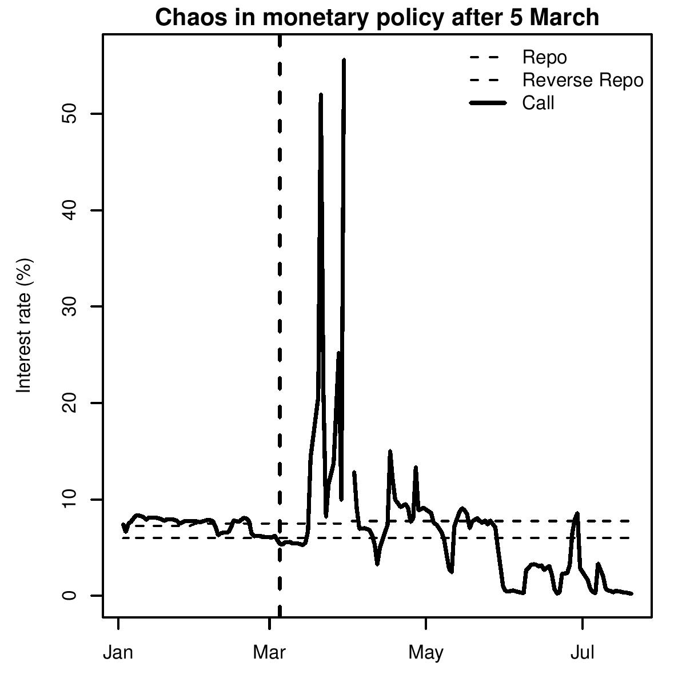

Policy without framework
Indian Express, 27 July 2007
 RBI Governor YV Reddy will announce the credit policy for the next quarter on July 31. The event is unfortunately marked with great uncertainty. The last few months saw a sharp increase in EMIs and a sudden appreciation of the exchange rate that left lakhs of firms and households rattled. The credit policy announcements of RBI officials had not prepared them for what was going to hit them. Business plans went awry. Household budgets were shaken. The July credit policy needs to do a better job than the last one. It needs to give a clear signal about the RBI's thought process. But first, the RBI needs to get back its control over the short term interest rate.
Many people are hoping that interest rates will be reduced in the up-coming policy. One rationale for cutting interest rates is that inflation has come down. Interest rates were raised on the logic that the inflation rate was high, the economy was overheating and India desires an inflation rate below 5 percent. Now the inflation rate based on the wholesale price index has been consistently below 5 percent for many weeks. Further, the RBI was concerned that bank credit growth was too high. It had been above 30 percent for nearly 3 years. Growth in bank credit has now come down. In June 2007 it was 24.6 percent compared to 31.0 percent in June 2006. Further, higher interest rates in India are attracting capital inflows. Companies borrow abroad cheaper in dollars or yen adding to RBI's problems as it puts pressure on the rupee to appreciate. Given these developments would RBI ease a little?
Cutting interest rates would involve changing the policy rate. Central banks usually operate with one policy rate. The US Federal Reserve Bank, for instance, works with the Fed rate. This is currently at 5.25 percent. Similarly, the Bank of England has a single policy rate which is the short-term rate. Changing interest rates is simply a matter of announcing a change in the policy rate.
In India there are mainly two rates through which the RBI can signal a change in interest rates: a lending rate and a borrowing rate for overnight funds. These constitute a "corridor" between which short term interest rates move.
This framework worked well until March 2007 when RBI announced a ceiling on the amount it would borrow from banks. This ceiling was set at Rs 3000 crore. Figure 1 shows how the call money rate, the rate at which banks borrow from each other in the overnight money market, has since jumped up and down, no longer bound by the corridor. On the upper side, since banks have to offer collateral, if they do not have any surplus treasury bills sitting with them, they are not able to borrow at the RBI's lending rate. On the lower end, once RBI has borrowed Rs 3000 crore, it refuses to borrow any more and money market rates fall sharply. The difference between bids for lending to RBI received and accepted shows how pitifully inadequate RBI's borrowing is and why interest rates are no longer bound by the lower limit of the corridor. For example, on June 25 bids for banks wanting to lend to RBI worth Rs 60,000 crore were received, but only Rs 3000 crore were accepted. Similarly, the next day, on June 26, bids worth another Rs 60,000 crores were received, but again only Rs 3000 crore accepted. The result was a large amount of surplus liquidity in the market and a sharp fall in interest rates. Banks do not know what is the short term interest rate because of the lack of the corridor with call money rates at near zero.
The imposition of a ceiling on the amount RBI borrows has led to a serious mistake in the monetary policy framework. This constitutes an abdication of the core function of a central bank. Short term rates are no longer in the corridor. The RBI does not actually pin down the short rate anymore. After having emerged as an effective instrument of monetary policy, this one ostensibly small policy change has done great damage to a framework that was successfully evolving. For the RBI to be a monetary authority it must be able to cut or raise rates. A crucial step would be to regain control over this instrument. In the forthcoming monetary policy announcement Dr Reddy must amend this mistake. He must announce the removal of the ceiling on the amount that RBI is willing to borrow. This will make the RBI's interest rate signal an effective signal again. Further, today banks can lend to the RBI at 6.0 percent, while they borrow from the RBI at 7.75 percent. This is a spread of 175 basis points and is too wide to pin down a short rate accurately. The forthcoming credit policy must focus on recreating a framework for pinning down the policy short rate as is done by well functioning central banks worldwide. Only then will any announcement of a change in interest rates be meaningful.
LAF
The rate at which RBI lends money to banks is known as the repo rate. Banks give RBI collateral in the form of treasury bills. The rate at which RBI borrows from banks is known as the reverse repo rate. Since March 5, 2007 RBI borrows only Rs 3000 crore per day. On some days this is 1/20 the of the amount banks want to lends. At such times interest rates have dropped to near zero. This framework is called the Liquidity Adjustment Facility (LAF). It works by providing a corridor between the RBI's lending rate and borrowing rate. The interest rates at which banks lend and borrow from each other in the overnight money markets should remain in this corridor.
Back up to Ila Patnaik's media page
Back up to Ila Patnaik's home page